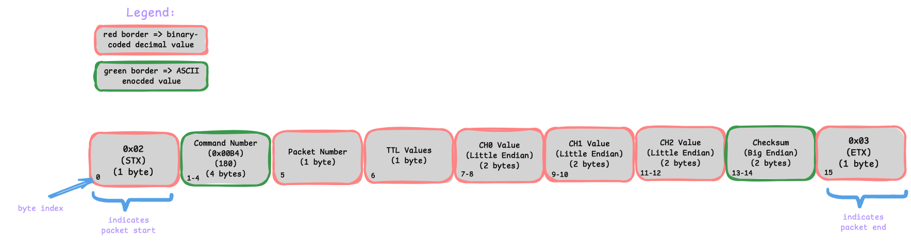
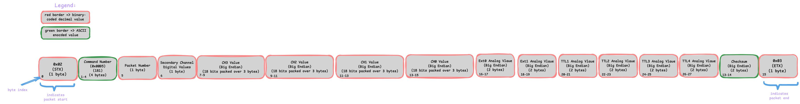
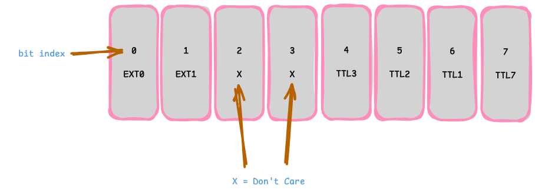

Morelia.packet.data package
Submodules
Morelia.packet.data.data_packet module
Morelia.packet.data.data_packet_8206hr module
- class Morelia.packet.data.data_packet_8206hr.DataPacket8206HR(raw_packet, preamp_gain)
Bases:
DataPacketThis class handles decoding 8206HR data packets (previously known as Binary4 packets). It is optimized to be as effectient as possible for quick streaming by implementing lazy decoding via properties, slots, and memoization. On a binary level, data packets for the 8206HR look as follows:

The raw packet and several values from the device (with the same names as the parameters) needed for calculations are passed to the constructor. Outside of testing, users should never be instantiating this class directly, that should be limited to instances of the
Pod8206HRclass.- Parameters:
raw_packet (
bytes) – Raw bytes of packet read from device.- Preamp_gain:
Desired preamplifer gain. Used for decoding read values from device. Must be 10 or 100.
- property ch0: int
- Returns:
Value read from channel 0.
- property ch1: int
- Returns:
Value read from channel 1.
- property ch2: int
- Returns:
Value read from channel 2.
- property ttl1: DigitalSignal
- Returns:
The first bit of the TTL byte.
- property ttl2: DigitalSignal
- Returns:
The second bit of the TTL byte.
- property ttl3: DigitalSignal
- Returns:
The third bit of the TTL byte.
- property ttl4: DigitalSignal
- Returns:
The fourth bit of the TTL byte.
Morelia.packet.data.data_packet_8401hr module
- class Morelia.packet.data.data_packet_8401hr.DataPacket8401HR(preamp_gain, ss_gain, primary_channel_modes, secondary_channel_modes, raw_packet, channel_invert=(False, False, False, False))
Bases:
DataPacketThis class handles decoding 8401HR data packets (previously known as Binary5 packets). It is optimized to be as effectient as possible for quick streaming by implementing lazy decoding via properties, slots, and memoization. On a binary level, data packets for the 8401HR look as follows (this packet is big, so you may need to zoom in… sorry about that 😭):

There are a couple things to note. Firstly, you may see that some of the byte indices are repeated between the segements containing the channels. That is because each 18-bit channel value is packed over 3 bytes. Meaning, for example, that bytes 7 and 8 contain entirely data related to CH3’s value but byte 9 is mixed. The first two bits contain the 2 least significant bits of CH3’s value, and the remaining six bits contain the six most significant bits of CH2’s value.
Secondly, you may notice we capture both analog and digital information for each secondary channel. Based on the
secondary channel modespassed to the packet constructor, we will present the proper value read (analog or digital) to the user.In terms of reading the digital status values, the byte is decoded as follows:

The raw packet and several values from the device (with the same names as the parameters) needed for calculations are passed to the constructor. Outside of testing, users should never be instantiating this class directly, that should be limited to instances of the
Pod8401HRclass.- Parameters:
preamp_gain (
tuple[int]) – Tuple storing the pramplifier gain for all four channels.ss_gain (
tuple[int]) – Tuple storing the second-stage gain for all four channels.primary_channel_mode – A tuple containing the mode of operation for each primary channel (EEG/EMG or Biosensor).
secondary_channel_modes (
tuple[SecondaryChannelMode]) – A tuple containing the mode of operation for each secondary (TTL/AEXT) channel (analog or digital).raw_packet (
bytes) – Raw bytes of packet read from device.
- property ch0: int
- Returns:
Value read from channel 0.
- property ch1: int
- Returns:
Value read from channel 1.
- property ch2: int
- Returns:
Value read from channel 2.
- property ch3: int
- Returns:
Value read from channel 3.
- property ext0: int | DigitalSignal
- Returns:
Value read from EXT0.
- property ext1: int | DigitalSignal
- Returns:
Value read from EXT1.
- static get_primary_channel_value(channel_mode, preamp_gain, ss_gain, raw_value)
Channel values from the data packet cannot be used directly, we must preform some math on them to get them to be real, usable values. This function is used by the properties to calcuate this when a channel value is asked for. This method is used by the properties internally, therefore it does not need to be called when acessing their value outside of this class.
When ss_gain or preamp_gain is None (e.g. no-connect channel), a default is used so that the formula does not raise. :meta private:
- Return type:
int
- property ttl1: int | DigitalSignal
- Returns:
Value read from TTL1.
- property ttl2: int | DigitalSignal
- Returns:
Value read from TTL2.
- property ttl3: int | DigitalSignal
- Returns:
Value read from TTL3.
- property ttl4: int | DigitalSignal
- Returns:
Value read from TTL4.